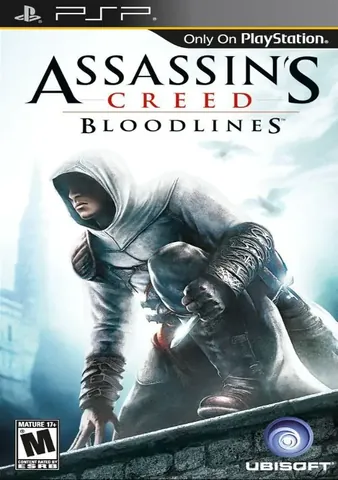
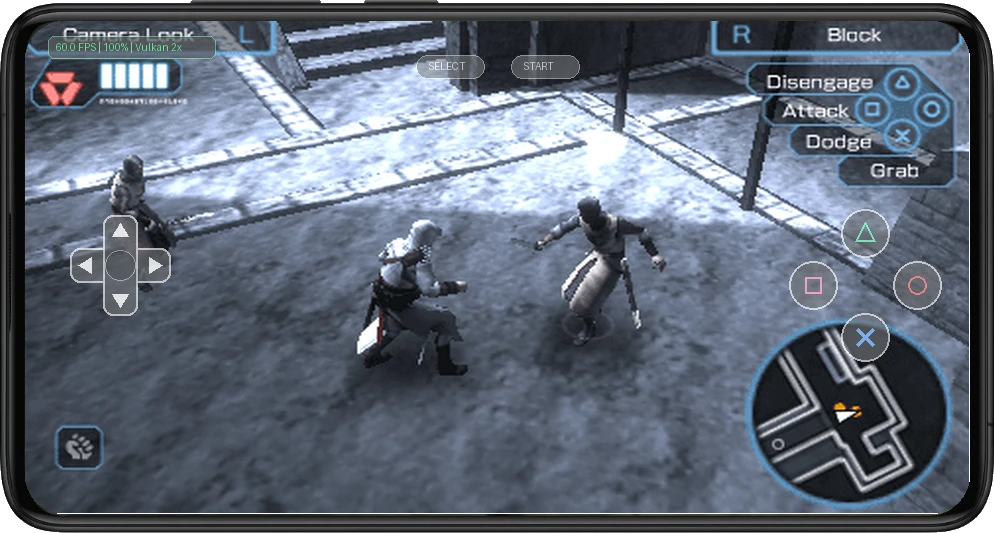
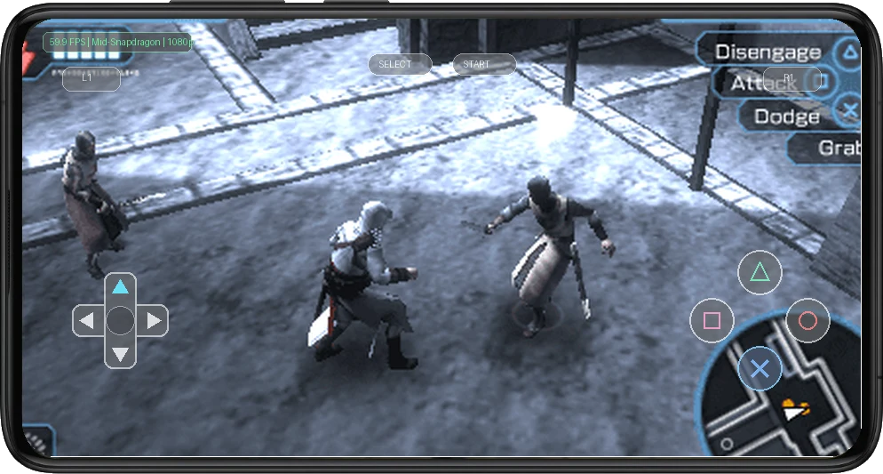

📱 Mobile Gameplay & Touch Controls in Action
Real-time emulation running with active on-screen touch controls on Android at 60 FPS.


1. Legacy & Historical Context
Assassins Creed - Bloodlines represents an ambitious technical endeavor for the PSP, pushing the graphics synthesizer and audio processors to deliver fast action, memorable art direction, and challenging gameplay loops.
Modern Android emulation elevates Assassins Creed - Bloodlines with crystal-clear 1080p internal resolution upscaling, stable 60 FPS frame pacing, and instant quick-saves that breathe fresh life into this retro classic.
2. Optimal Mobile Emulation Settings
To achieve an uncompromising 60 FPS experience with zero thermal throttling on modern Qualcomm Snapdragon processors (e.g., Snapdragon 778G, 8+ Gen 1, 8 Gen 2, and 8 Gen 3), apply the following tuned configuration inside PPSSPP (v1.17+):
- Backend Renderer: Use the Vulkan rendering backend. On modern mobile architectures, Vulkan allows PPSSPP to communicate directly with the Adreno GPU pipeline with virtually zero CPU driver overhead.
- Internal Resolution: Render at 3x Native PSP on budget devices and 4x to 5x Native (1080p/1440p) on mid-to-high Snapdragon devices. PPSSPP is exceptionally lightweight and delivers razor-sharp geometry.
- Texture Filtering & Upscaling: Set Texture Filtering to "Auto" or "Linear", and enable 16x Anisotropic Filtering. For 2D menu elements and HUD icons, enable "Texture Scaling" with xBRZ at 2x.
- Audio Driver & Latency: Select AAudio backend on Android 10+ devices with Audio Latency set to "Low". This eliminates firing and impact sound delays with zero buffer underrun.
- CPU Multithreading & Sync: Enable "Fast Memory (unstable)" and "Hardware Transform". Despite the warning, Fast Memory is 100% stable on Android Snapdragon architectures and yields up to a 15% speed increase.
3. Known Graphical Fixes & Emulation Patches
Texture Shimmer & MIP Map Banding
The Issue: Distant textures and ground planes can shimmer during fast forward camera travel.
The Fix: Set "Anisotropic Filtering" to 16x and set "Texture Filtering" to Linear. Enable "Hardware Transform".
Audio Latency Delay on Sound FX
The Issue: Impact sound effects can lag behind visual hits by several frames when using default OpenSL audio.
The Fix: Switch Audio Backend to "AAudio" with Audio Latency set to "Low" in PPSSPP Audio settings.
4. Touch Controls vs. Bluetooth Gamepads
Navigating intense action sequences and camera panning in Assassins Creed - Bloodlines via capacitive touch controls works reliably when using a customized on-screen layout. Placing the virtual thumbstick slightly closer to the lower screen edge and scaling action buttons to 110% ensures comfortable reach without obstructing on-screen visual hazards.
For extended gaming sessions and demanding boss encounters, snapping your smartphone into a USB-C telescopic gamepad (such as the Razer Kishi or GameSir G8) or syncing a Bluetooth PlayStation DualSense controller provides authentic tactile feedback. Physical analog sticks and textured shoulder bumpers eliminate thumb fatigue and grant flawless precision control.
5. Final Verdict & Review Score
Overall romstofun Score
Community Choice & Verified Playable
Ready to Play on Your Android Device?
Get the companion application on Google Play for one-tap controller profiles, optimal settings, and seamless emulation.
Get on Google Play ↗